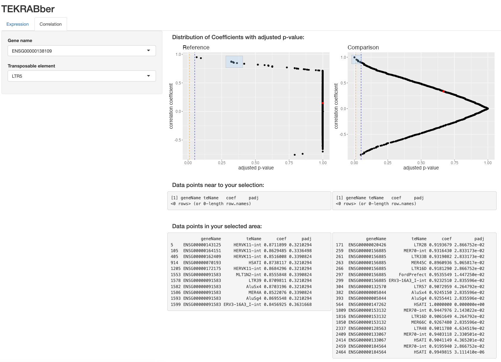
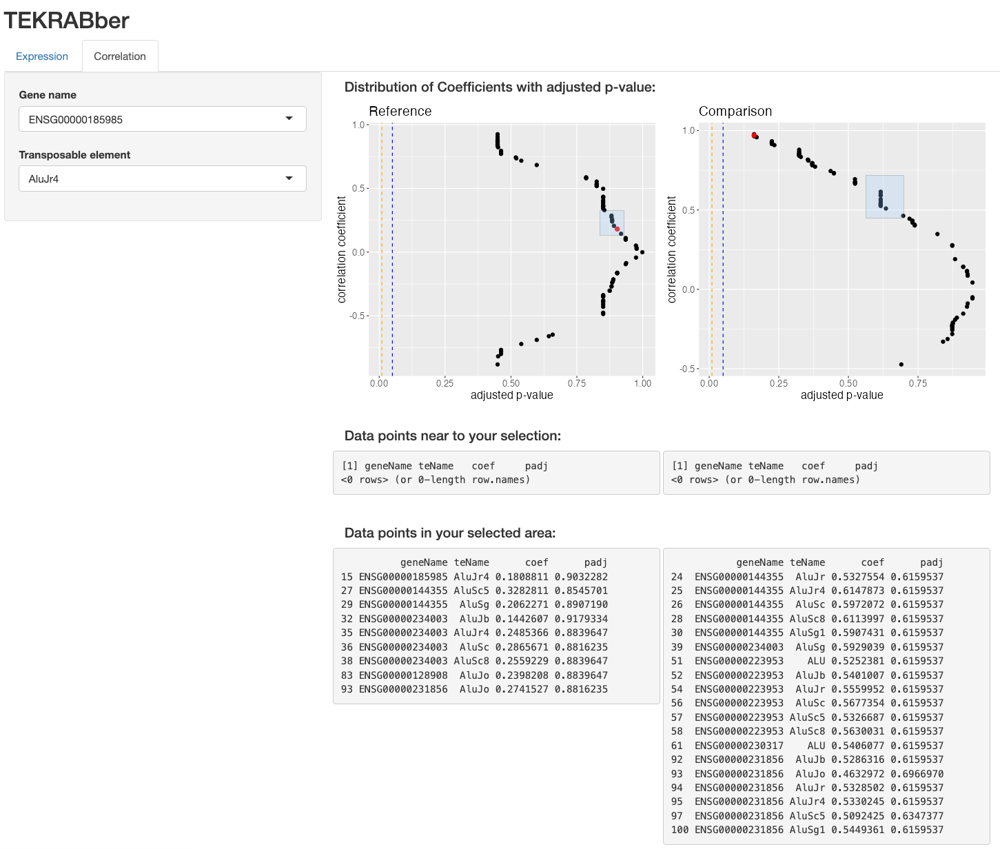

install.packages("BiocManager")
BiocManager::install("TEKRABber")TEKRABber
Bioconductor
R
software
transposable elements
correlation
Introduction
TEKRABber is a Bioconductor package I published early this year. It is made to provide a user-friendly pipeline for comparing orthologs and transposable elements (TEs) between two species. It considers the orthology confidence between two species from BioMart to normalize expression counts and detect differentially expressed orthologs/TEs. Then it provides one to one correlation analysis for desired orthologs and TEs. There is also an app function to have a first insight on the result. Users can prepare orthologs/TEs RNA-seq expression data by their own preference to run TEKRABber following the data structure mentioned in the following demo.
Although TEKRABber is developed to compare between species, you can still use it for experiment which compare control and treatment in the same species. If you are more interest in this, you may directly jump to the second half of this article.
Installation
For a stable version, I recommend download TEKRABber from Bioconductor archive.
library(TEKRABber)
library(SummarizedExperiment) # load it if you are following this tutorial1. Comparing between two species
In the first example, we randomly generated/picked gene and transposable elements (TE) expression data from 10 humans and 10 chimpanzees (Khrameeva et al. 2020). The values for the first column of gene and TE count table must be Ensembl gene ID and TE name:
# load built-in data
data(speciesCounts)
hmGene <- speciesCounts$hmGene
hmTE <- speciesCounts$hmTE
chimpGene <- speciesCounts$chimpGene
chimpTE <- speciesCounts$chimpTE
# the first column must be Ensembl gene ID for gene, and TE name for TE
head(hmGene) Geneid SRR8750453 SRR8750454 SRR8750455 SRR8750456 SRR8750457
1 ENSG00000000003 250 267 227 286 128
2 ENSG00000000005 13 2 15 9 5
3 ENSG00000000419 260 311 159 259 272
4 ENSG00000000457 86 131 100 94 80
5 ENSG00000000460 21 17 42 33 55
6 ENSG00000000938 162 75 95 252 195
SRR8750458 SRR8750459 SRR8750460 SRR8750461 SRR8750462
1 394 268 102 370 244
2 0 1 8 0 2
3 408 371 126 211 374
4 158 119 46 77 81
5 29 50 11 18 20
6 137 93 108 197 691.1 Query ortholog information and estimate scaling factor
In the first step, we use orthologScale() to get orthology information and calculate the scaling factor between two species. The species name needs to be the abbreviation of scientific species name used in Ensembl. (Note: (1)This step queries information using biomaRt and it might need some time or try different mirrors due to the connections to Ensembl (2)It might take some time to calculate scaling factor based on your data size).
# You can use the code below to search for species name
ensembl <- biomaRt::useEnsembl(biomart = "genes")
head(biomaRt::listDatasets(ensembl)) dataset description
1 abrachyrhynchus_gene_ensembl Pink-footed goose genes (ASM259213v1)
2 acalliptera_gene_ensembl Eastern happy genes (fAstCal1.2)
3 acarolinensis_gene_ensembl Green anole genes (AnoCar2.0v2)
4 acchrysaetos_gene_ensembl Golden eagle genes (bAquChr1.2)
5 acitrinellus_gene_ensembl Midas cichlid genes (Midas_v5)
6 amelanoleuca_gene_ensembl Giant panda genes (ASM200744v2)
version
1 ASM259213v1
2 fAstCal1.2
3 AnoCar2.0v2
4 bAquChr1.2
5 Midas_v5
6 ASM200744v2# In order to save time, we have save the data for this tutorial.
data(fetchDataHmChimp)
fetchData <- fetchDataHmChimp
# Query the data and calculate scaling factor using orthologScale():
# fetchData <- orthologScale(
# geneCountRef = hmGene,
# geneCountCompare = chimpGene,
# speciesRef = "hsapiens",
# speciesCompare = "ptroglodytes"
# )1.2 Create inputs for differentially expressed analysis and correlation estimation
We use DECorrInputs() to return inputs files for downstream analysis.
inputBundle <- DECorrInputs(
orthologTable = fetchData$orthologTable,
scaleFactor = fetchData$scaleFactor,
geneCountRef = hmGene,
geneCountCompare = chimpGene,
teCountRef = hmTE,
teCountCompare = chimpTE
)1.3 Differentially expressed analysis (DE analysis)
In this step, we need to generate a metadata contain species name (i.e., human and chimpanzee). The row names need to be same as the DE input table and the column name must be species (see the example below). Then we use DEgeneTE() to perform DE analysis. When you are comparing samples between two species, the parameter expDesign should be TRUE (as default).
meta <- data.frame(
species = c(rep("human", ncol(hmGene) - 1),
rep("chimpanzee", ncol(chimpGene) - 1))
)
meta$species <- factor(meta$species, levels = c("human", "chimpanzee"))
rownames(meta) <- colnames(inputBundle$geneInputDESeq2)
hmchimpDE <- DEgeneTE(
geneTable = inputBundle$geneInputDESeq2,
teTable = inputBundle$teInputDESeq2,
metadata = meta,
expDesign = TRUE
)1.4 Correlation analysis
Here we use corrOrthologTE() to perform correlation estimation comparing each ortholog and TE. This is the most time-consuming step if you have large data. For a quick demonstration, we use a relatively small data. You can specify the correlation method and adjusted p-value method. The default methods are Pearson’s correlation and FDR. Note: For more efficient and specific analysis, you can subset your data in this step to focus on only the orthologs and TEs that you are interested in.
# load built-in data
data(speciesCorr)
hmGeneCorrInput <- assay_tekcorrset(speciesCorr, "gene", "human")
hmTECorrInput <- assay_tekcorrset(speciesCorr, "te", "human")
chimpGeneCorrInput <- assay_tekcorrset(speciesCorr, "gene", "chimpanzee")
chimpTECorrInput <- assay_tekcorrset(speciesCorr, "te", "chimpanzee")
hmCorrResult <- corrOrthologTE(
geneInput = hmGeneCorrInput,
teInput = hmTECorrInput,
corrMethod = "pearson",
padjMethod = "fdr"
)
chimpCorrResult <- corrOrthologTE(
geneInput = chimpGeneCorrInput,
teInput = chimpTECorrInput,
corrMethod = "pearson",
padjMethod = "fdr"
)
head(hmCorrResult) geneName teName pvalue coef padj
1 ENSG00000143125 L1MD 0.271964872 0.38497828 0.9990235
2 ENSG00000143125 MSTA 0.335873091 0.34036703 0.9990235
3 ENSG00000143125 MLT1N2-int 0.966658172 0.01524552 0.9990235
4 ENSG00000143125 LTR57 0.067870603 0.59794954 0.9990235
5 ENSG00000143125 HERVK11-int 0.001028058 0.87118988 0.3210294
6 ENSG00000143125 LTR5 0.855235258 -0.06647109 0.99902351.5 Explore your result using appTEKRABber():
TEKRABber provides an app function for you to quickly view your result. First, you will need to assign the differentially expressed orthologs/TEs results, correlation results and metadata as global variables: appDE, appRef, appCompare and appMeta. See the following example.
#create global variables for app-use
appDE <- hmchimpDE
appRef <- hmCorrResult
appCompare <- chimpCorrResult
appMeta <- meta # this is the same one in DE analysis
appTEKRABber()
The Expression tab show selected genes and TEs in boxplot. It also provide DE information and correlation statistics.

In the Correlation tab page (above figure), you can select your data in scatter plots in three ways. (1) Specify the data point and it will turn red in the distribution of your results (2) Show the distribution of all the data from your correlation results based on their correlation coefficients and adjusted p-value. The blue vertical dashed line indicates the boundary of adjusted p-value is 0.05, and the orange one is for adjusted p-value 0.01 (3) you can click the data points which you are interested in, and it will be listed in the table. You can also drag a certain area to show data points in it.
2. Comparing control and treatment samples within the same species
If you want to compare selected genes and TEs (1) from different tissue in same species or (2) control and drug treatment in same tissue in same species, please generate all the input files following the input format. Here we show an example data of prepared input files including expression counts from 10 control and 10 treatment samples. The format of input data: row names should be gene name or id, and column name is your sample id (please see details below).
# load built-in data
data(ctInputDE)
geneInputDE <- ctInputDE$gene
teInputDE <- ctInputDE$te
# you need to follow the input format as below
head(geneInputDE) control_1 control_2 control_3 control_4 control_5 treatment_6
ENSG00000180263 1470 2072 1864 2238 2246 2599
ENSG00000185985 1599 1045 946 1642 2199 665
ENSG00000144355 517 380 1211 812 48 388
ENSG00000234003 4 4 14 10 5 9
ENSG00000257342 1 1 1 2 3 3
ENSG00000223953 259 830 133 258 850 504
treatment_7 treatment_8 treatment_9 treatment_10
ENSG00000180263 2679 2562 2532 2682
ENSG00000185985 1023 2477 1423 1731
ENSG00000144355 275 633 59 248
ENSG00000234003 4 18 13 22
ENSG00000257342 0 6 1 5
ENSG00000223953 1143 1500 498 8642.1 DE analysis
For DE analysis in the same species, you also use DEgeneTE() function, however, you need to set the parameter expDesign to FALSE. You also need to provide a metadata which this time the column name must be experiment. See demonstration below:
metaExp <- data.frame(experiment = c(rep("control", 5), rep("treatment", 5)))
rownames(metaExp) <- colnames(geneInputDE)
metaExp$experiment <- factor(
metaExp$experiment,
levels = c("control", "treatment")
)
resultDE <- DEgeneTE(
geneTable = geneInputDE,
teTable = teInputDE,
metadata = metaExp,
expDesign = FALSE
)2.2 Correlation analysis
For a quick demonstration to perform correlation of genes and TEs in control and treatment sample, we use relatively small input tables which only include 10 genes and 10 TEs.
# load built-in data
data(ctCorr)
geneConCorrInput <- assay_tekcorrset(ctCorr, "gene", "control")
teConCorrInput <- assay_tekcorrset(ctCorr, "te", "control")
geneTreatCorrInput <- assay_tekcorrset(ctCorr, "gene", "treatment")
teTreatCorrInput <- assay_tekcorrset(ctCorr, "te", "treatment")
# you need to follow the input format as below
head(geneConCorrInput) control_1 control_2 control_3 control_4 control_5
ENSG00000180263 1470 2072 1864 2238 2246
ENSG00000185985 1599 1045 946 1642 2199
ENSG00000144355 517 380 1211 812 48
ENSG00000234003 4 4 14 10 5
ENSG00000257342 1 1 1 2 3
ENSG00000223953 259 830 133 258 850controlCorr <- corrOrthologTE(
geneInput = geneConCorrInput,
teInput = teConCorrInput,
corrMethod = "pearson",
padjMethod = "fdr"
)
treatmentCorr <- corrOrthologTE(
geneInput = geneTreatCorrInput,
teInput = teTreatCorrInput,
corrMethod = "pearson",
padjMethod = "fdr"
)
head(treatmentCorr) geneName teName pvalue coef padj
1 ENSG00000180263 ALU 0.7350708 -0.2096204 0.8750842
2 ENSG00000180263 AluJb 0.6463988 -0.2814802 0.8729353
3 ENSG00000180263 AluJo 0.5879945 -0.3296607 0.8399922
4 ENSG00000180263 AluJr 0.6080013 -0.3130670 0.8563399
5 ENSG00000180263 AluJr4 0.7158070 -0.2251209 0.8729353
6 ENSG00000180263 AluSc 0.7130150 -0.2273721 0.87293532.3 Explore your result using appTEKRABber():
appDE <- resultDE
appRef <- controlCorr
appCompare <- treatmentCorr
appMeta <- metaExp
appTEKRABber()
References:
References
Khrameeva, Ekaterina, Ilia Kurochkin, Dingding Han, Patricia Guijarro, Sabina Kanton, Malgorzata Santel, Zhengzong Qian, et al. 2020. “Single-cell-resolution transcriptome map of human, chimpanzee, bonobo, and macaque brains.” Genome Research 30 (5): 776–89. https://doi.org/10.1101/gr.256958.119.